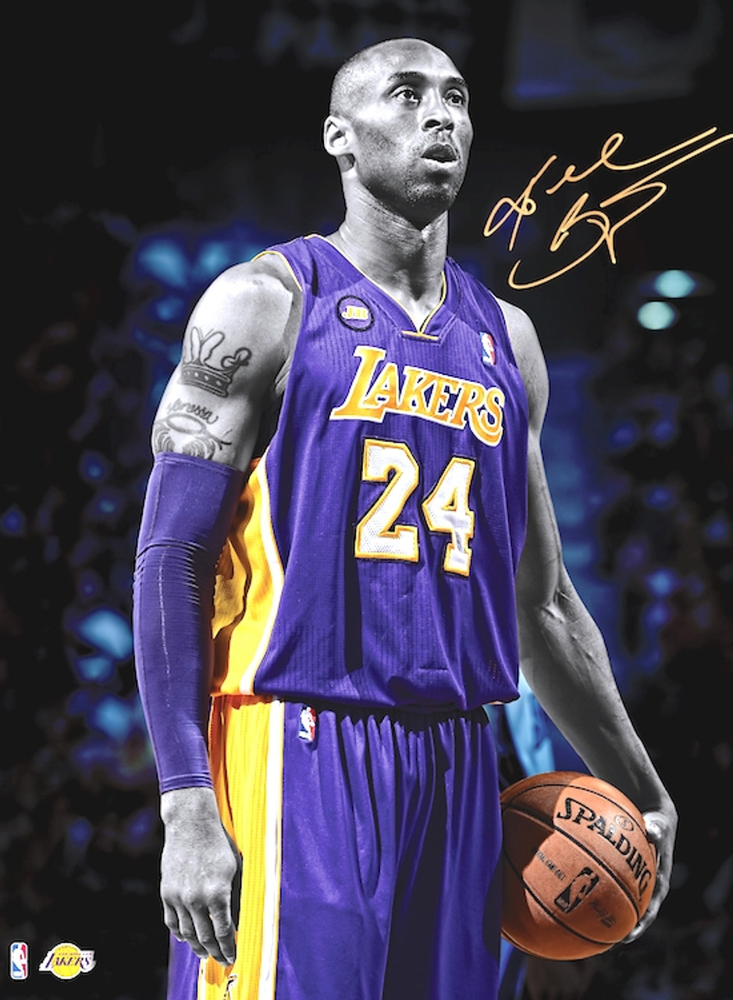

Kobe Bryant
|  |
Kobe Bryant foi um dos jogadores de basquete mais icônicos e talentosos da história da NBA. Nascido em 23 de agosto de 1978, na Filadélfia, Kobe ingressou na NBA diretamente do ensino médio, tornando-se um dos mais jovens jogadores a fazê-lo. Ele passou toda a sua carreira de 20 anos no Los Angeles Lakers, conquistando cinco campeonatos da NBA e sendo nomeado Jogador Mais Valioso das Finais em duas ocasiões. Bryant era conhecido por sua ética de trabalho incansável, mentalidade competitiva e habilidades excepcionais, incluindo um arremesso mortal e defesa implacável. Além de suas realizações no basquete, Kobe Bryant também deixou um legado duradouro fora das quadras. Ele era um empreendedor de sucesso, autor, cineasta e filantropo. Seu compromisso com a comunidade e com a promoção do basquete em todo o mundo o tornou uma figura influente. Tragicamente, Kobe Bryant faleceu em um acidente de helicóptero em janeiro de 2020, deixando um vazio no mundo do esporte. Sua memória e seu impacto perduram, e ele é lembrado como uma das maiores lendas do basquete de todos os tempos. Kobe Bryant também era conhecido pelo seu apelido, "Black Mamba," que ele adotou como um símbolo de sua mentalidade feroz e determinação. Esse apelido refletia a sua abordagem implacável para competir e vencer, tanto nos treinos quanto nos jogos. Sua carreira incluiu momentos memoráveis, como sua pontuação incrível de 81 pontos em um único jogo, o que o tornou um dos maiores cestinhas da história da NBA. O legado de Kobe Bryant como uma lenda do basquete e um modelo de perseverança continua a inspirar gerações de atletas e fãs em todo o mundo. |